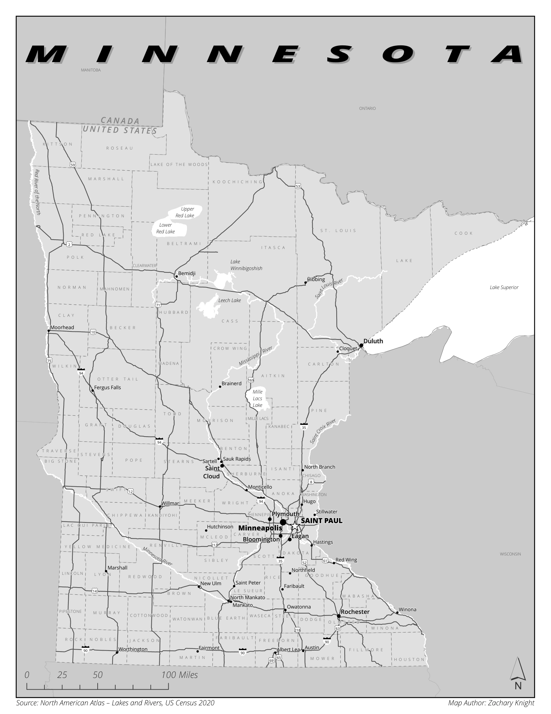

Reference mapping
Minnesota Reference Map
Roads, counties, and waterways

About this map
A statewide reference map of Minnesota showing counties, major roads, lakes, rivers, towns, and surrounding geographic context.
Reference mapping
Roads, counties, and waterways

A statewide reference map of Minnesota showing counties, major roads, lakes, rivers, towns, and surrounding geographic context.